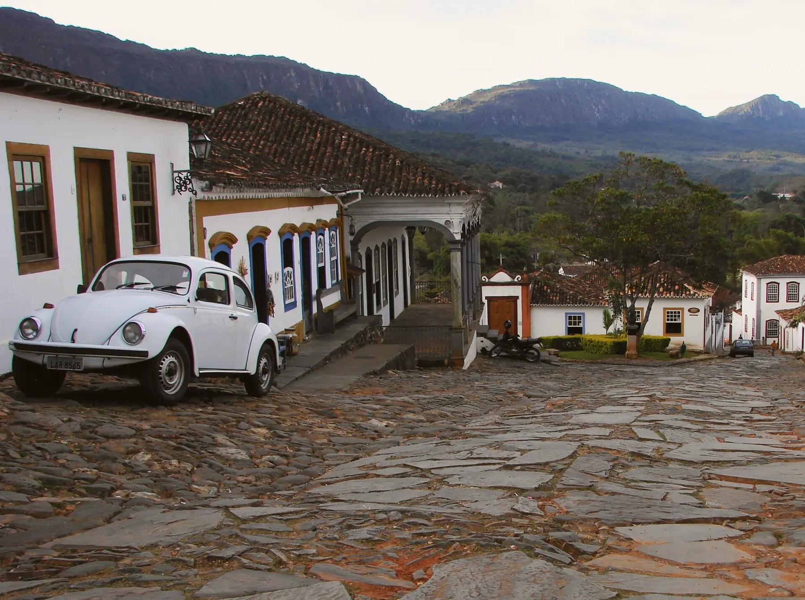
Tiradentes · Minas Gerais
Comida mineira de fogão a lenha.
No centro histórico, a panela vai do fogo direto para a sua mesa. Sem pressa, com fartura.
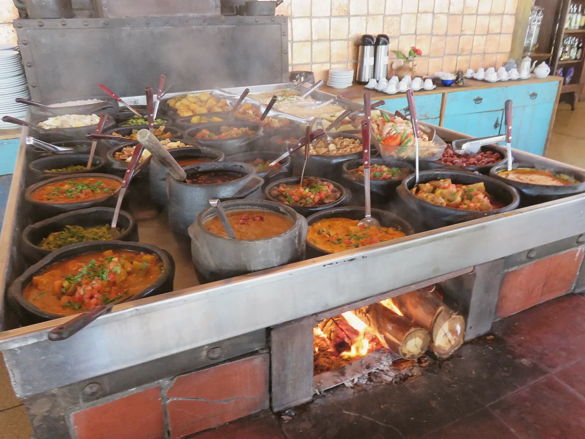
Aceso antes de a porta abrir.
O fogão a lenha é o coração da casa. Ele esquenta devagar, e é nessa temperatura que o feijão, o torresmo e a couve ficam do jeito que a gente lembra da casa da avó.
A mesa posta.
Pratos de panela, para dividir. O que chega à mesa saiu do fogo há pouco.
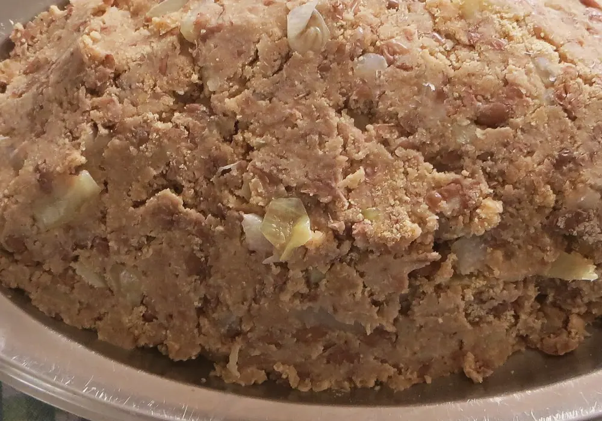
Tutu de feijão
Feijão batido com farinha, servido com torresmo e couve.
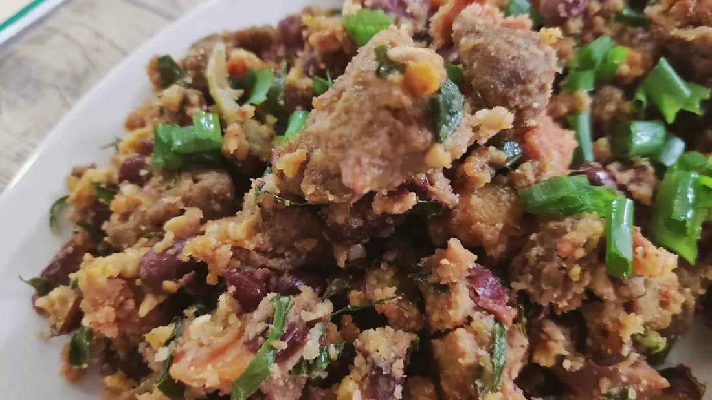
Feijão tropeiro
Feijão, farinha, linguiça e couve, refogados na hora.
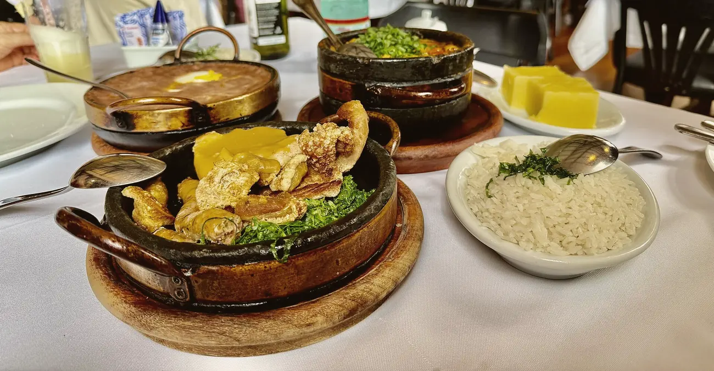
A panela na mesa
Servido na própria panela de barro, quente até o fim.
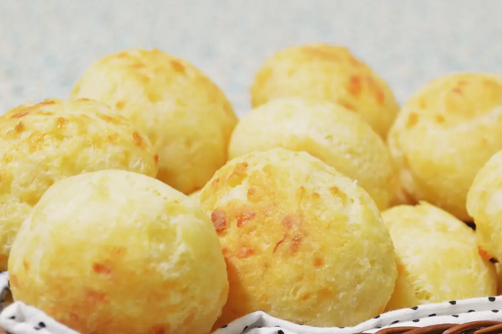
Pão de queijo
Saindo do forno, para abrir a conversa.
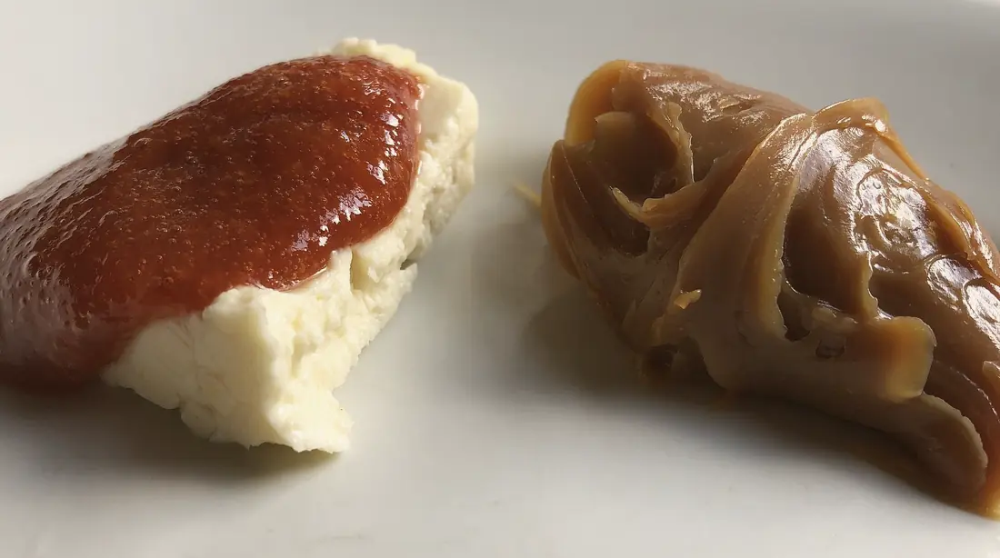
Doce de leite
O fim da refeição, com queijo e goiabada se você quiser.
A casa e a vila
Pedra, cal e serra.
Tiradentes guarda ruas de pedra, casarões caiados e a Serra de São José no fundo de cada esquina. A Casa Ofício cozinha como a vila vive: devagar, com lenha, e de portas abertas para quem chega.
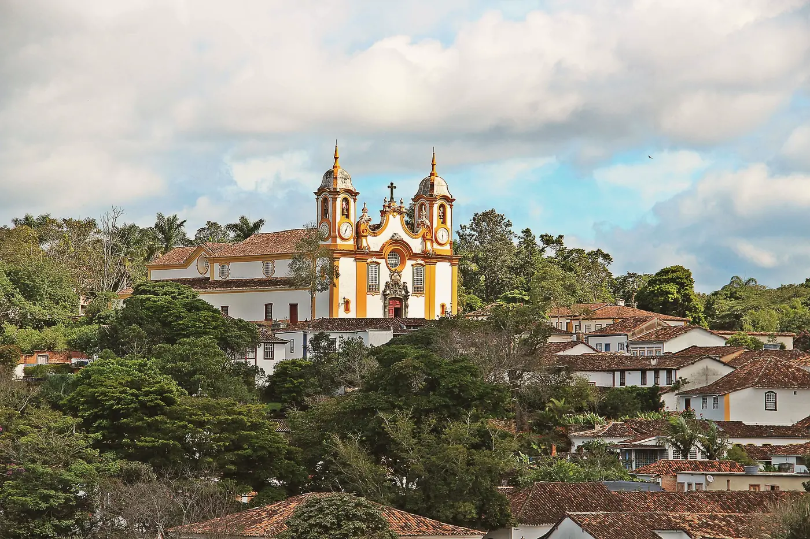
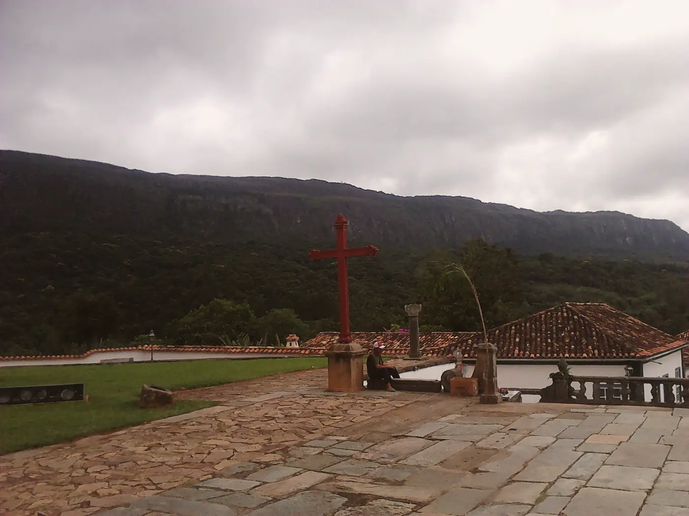
Do fogo à mesa, sem pressa.
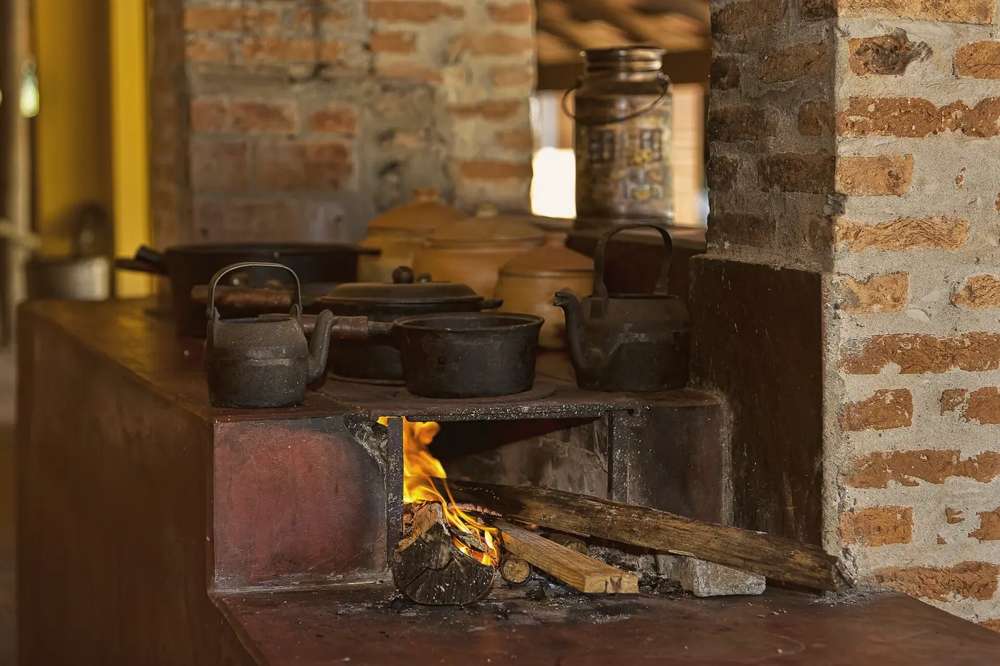
- 01
Acender
A lenha entra antes de a porta abrir. O fogão leva horas para chegar à temperatura em que o feijão cozinha sozinho.
- 02
Cozinhar devagar
Panelas de ferro e de barro ficam sobre a chapa. Ninguém corre com o tutu, o torresmo ou a couve.
- 03
Servir na panela
O que cozinhou na panela chega nela até a mesa, quente, para a família dividir.
- 04
Fechar com doce
Doce de leite, queijo com goiabada, café coado. A conta só vem quando vocês pedirem.
Sua mesa está posta.
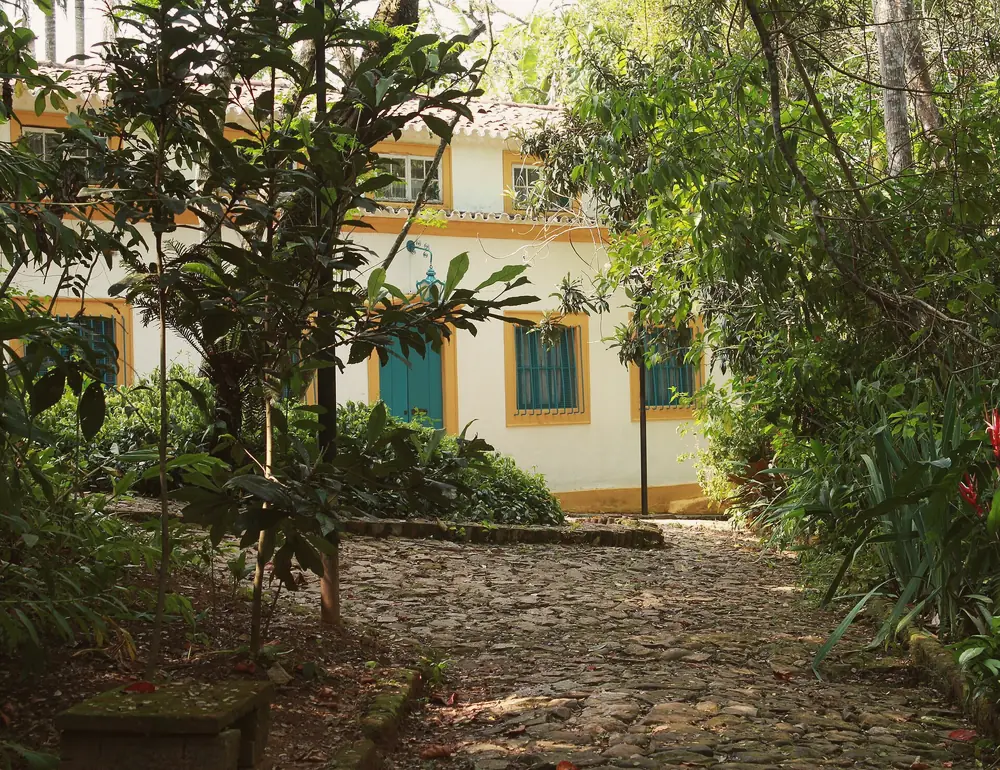
- Onde
- Centro histórico de Tiradentes, Minas Gerais
- Quando
- Sexta a domingo e feriados, almoço e jantar
- Grupos
- Mesas para casais e famílias; avise se vier com crianças